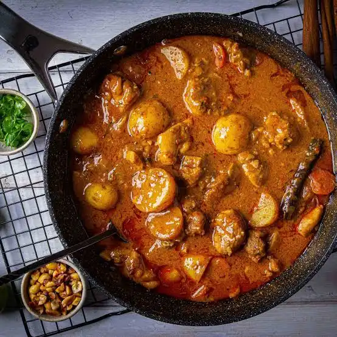

Massaman Curry

Description
Massaman Curry is a rich, mildly spicy, and aromatic Thai curry featuring tender braised meat, potatoes, and roasted peanuts simmered in coconut milk with warm roasted spices.
Ingredients
- 500 grams of beef chuck or chicken thighs, cut into bite-sized chunks
- 400 ml (1 can) of coconut milk
- 3–4 tbsp Massaman curry paste
- 2 medium potatoes, peeled and cubed
- 1 medium onion, cut into wedges
- ⅓ cup roasted peanuts
- 2–3 tbsp tamarind paste
- 2–3 tbsp palm sugar (or brown sugar)
- 2–3 tbsp fish sauce
- 3–4 cardamom pods, 1 cinnamon stick, and 2 bay leaves
- 1 tbsp vegetable oil
Steps
- Heat vegetable oil and half of the coconut milk in a pot over medium heat, then fry the Massaman curry paste with the cardamom, cinnamon, and bay leaves until fragrant and oil separates.
- Add the meat and stir until coated in the curry paste.
- Pour in the remaining coconut milk and enough water to cover the meat, then bring to a gentle simmer for 30–45 minutes until tender.
- Add the cubed potatoes, onion wedges, and roasted peanuts, and simmer for another 15–20 minutes until the potatoes are soft.
- Season with tamarind paste, palm sugar, and fish sauce to balance the sweet, sour, and salty flavors, then serve warm with steamed jasmine rice.
Home